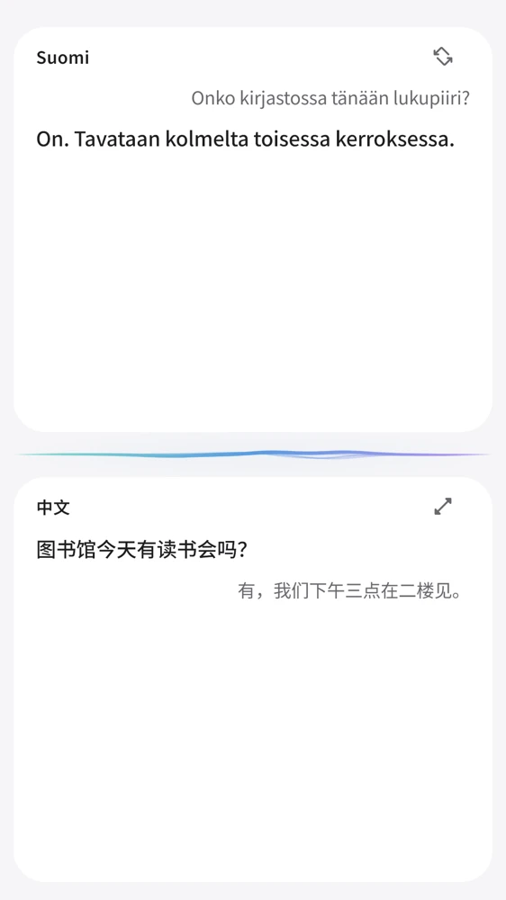

Independent project · In testing
Silto
A conversation in two languages.
I built a phone app that interprets between Finnish and Chinese as people speak. It detects the language automatically, so either person can take the next turn.
- Flutter
- Node.js
- WebSocket
Project notesClose notes
I wrote the Android app and the real-time backend that connects speech recognition, translation, and speech synthesis. I tested how the system handles numbers, units, and negation in spoken exchanges. The screenshot shows a sample conversation from the app.